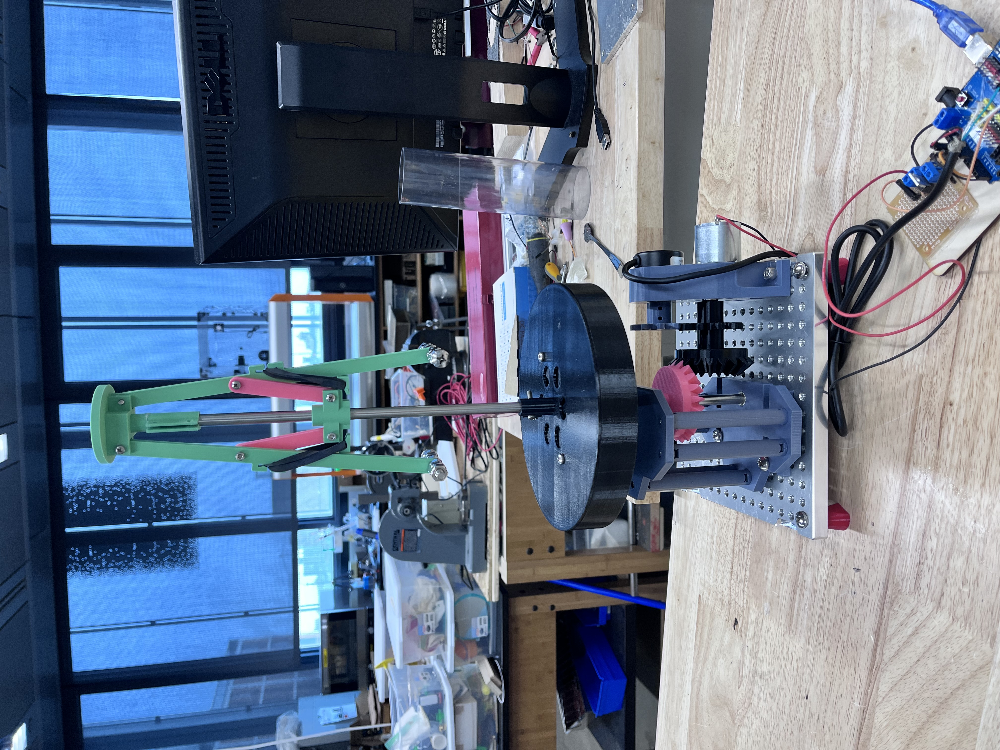
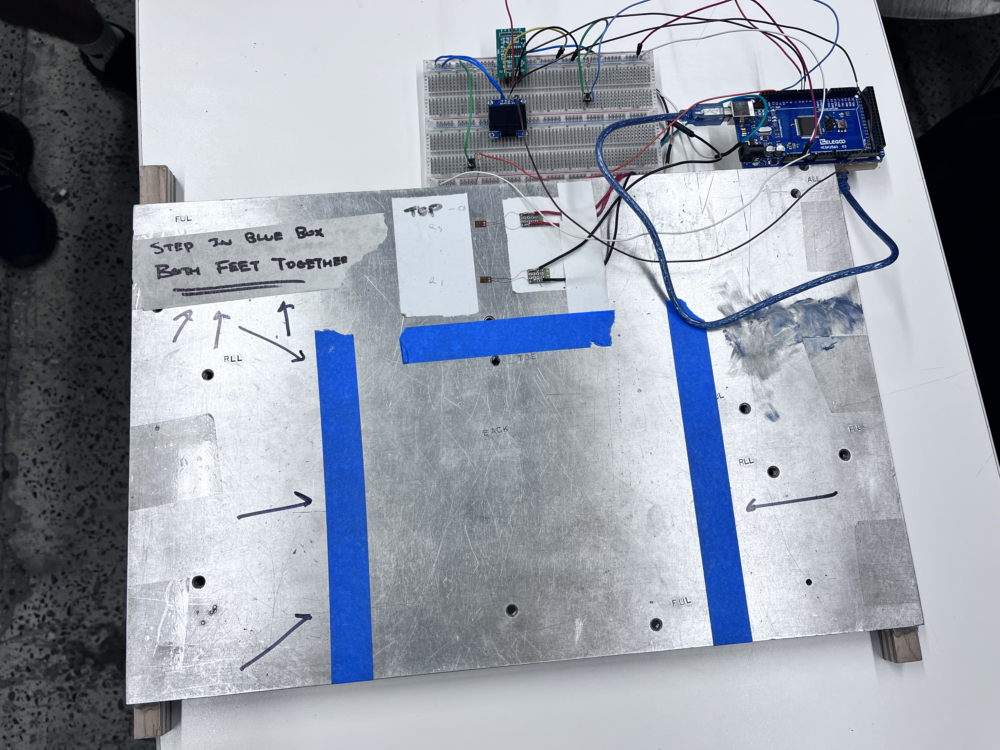
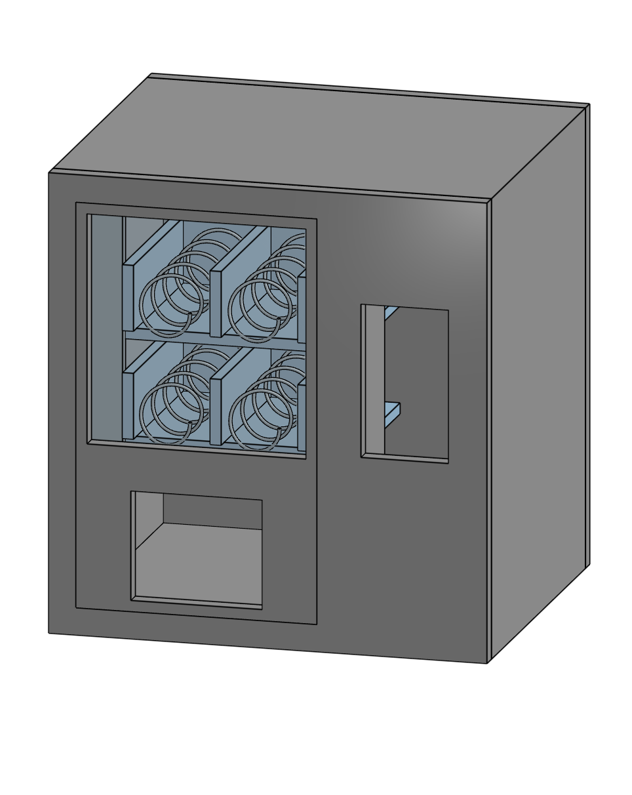

At the end of my freshman year, I collaborated with two teammates to design and build a mechanical rectifier that transforms oscillatory, variable rotational motion into a smooth, constant output. Inspired by Wintergatan’s drivetrain, this device is a mechanical analog to an electrical rectifier.
Learn more

I worked with two classmates to build a cost-effective scale from inexpensive electrical components and a sheet of scrap metal. The design measures anything from a book to a person by using a Wheatstone bridge to translate resistance changes into a voltage signal.
Learn more

Inspired by Arduino projects online, I wanted to combine my interest in mechanical design with a goal of improving my mechatronics skills. I am currently in the process of designing, building, and programming a vending machine from scratch. The end goal is to create a fully functional, small-scale vending machine.
Learn more